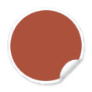
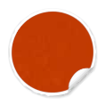
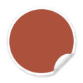
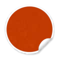
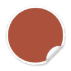
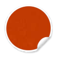
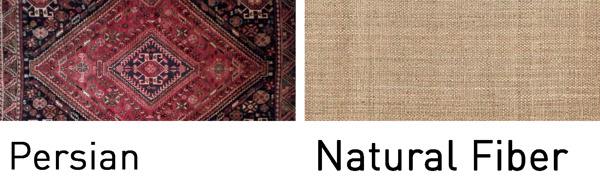

Colors
___________________________________________


 



___________________________________________


___________________________________________
____________________________
Large, medium-dark wood pieces with detailed carvings, chunky legs and ornately turned feet are iconic for Mediterranean style. Some other common pieces would be burnished hardware or pine armoires.
____________________________
Rich wood and dark metals, such as bronze, copper and especially wrought iron are often used in this style. Regarding fabric, wool, cotton and silk are common.
____________________________
Wrought iron chandeliers and moroccan inspired lanterns or pendants fit perfectly into this style. Sconces, table lamps and floor lamps are also widely used.
____________________________
Persian and natural fiber rugs are great fits for this style.

____________________________
Common choice will be heavy drapes. Wood shutters can also be used for a simple, natural look.
____________________________
Floors made of wood or polished stone are great choices for this style.
____________________________
Some architectural elements which can be corporated into this style are: glazed or stucco walls, ceiling wood beams, bullnose edging, arches and spiraling staircases.
____________________________
Common accessories for this style include: vases, candle stick holders, colorful dishes, copper pots
and pans, bowls of fruit, baskets, wall hangings, plants such as palm trees, and flowers.